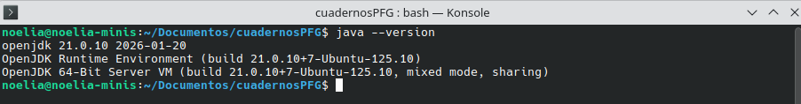
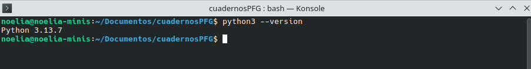
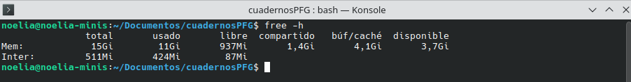
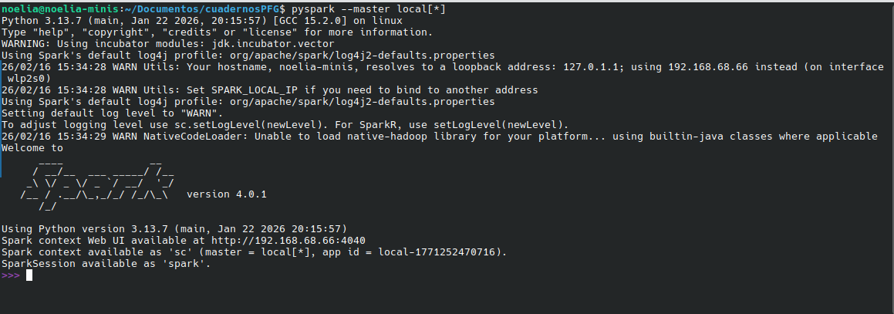
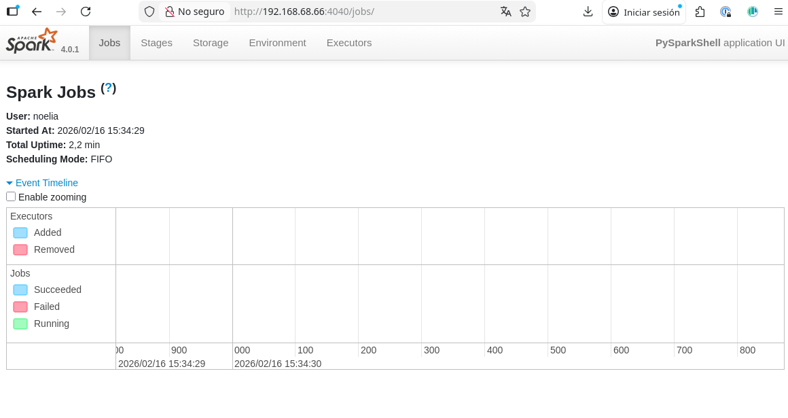
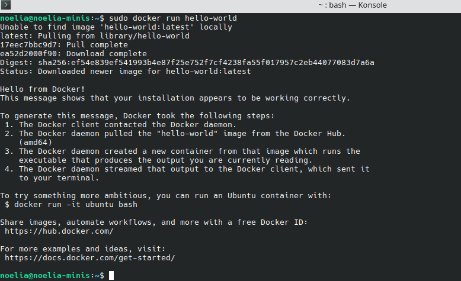
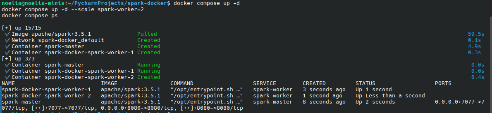
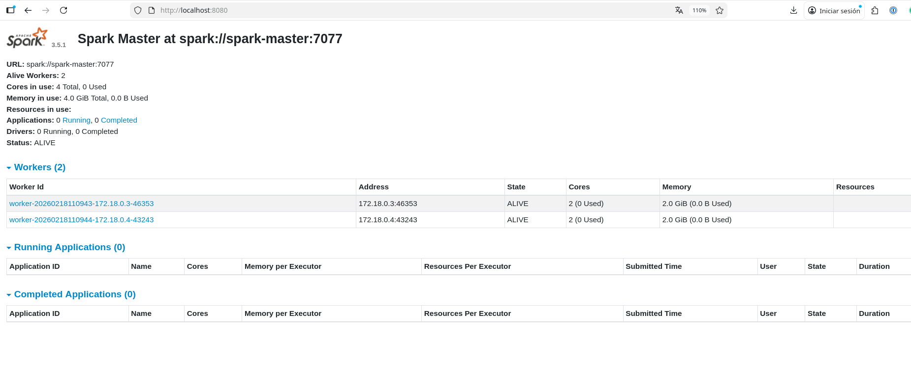
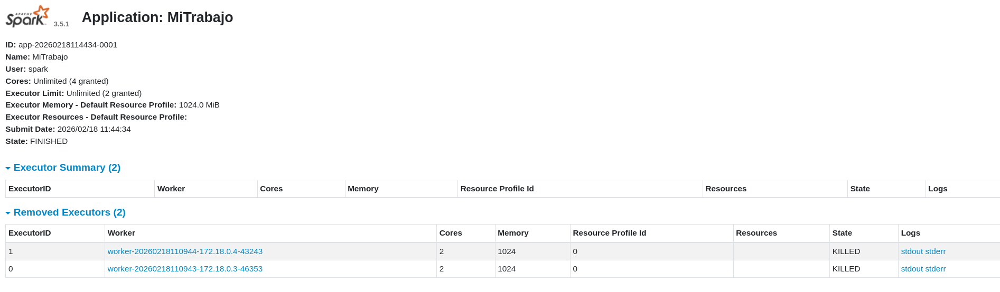
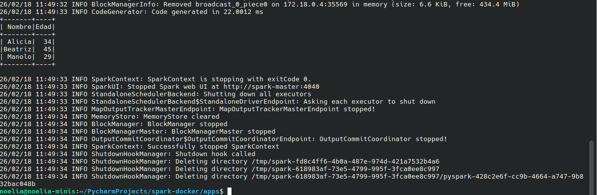

Instalación y configuración de Spark
INTRODUCCIÓN
El objetivo de esta lección es realizar la instalación de Apache Spark tanto en forma standalone como en un clúster dockers. El proceso de instalación se ha realizado en un entorno Linux, siendo facilmente reproducible en sistemas operativos MacOS. Por motivos de rendimiento, no se recomienda si instalación en sistemas operativos Windows, debido a como estos sistemas manejan la gestión de memoria RAM
En concreto estan instrucciones se han probado en un sistema 6.17.0-12-generic #12-Ubuntu SMP PREEMPT_DYNAMIC x86_64 GNU/Linux
INSTALACIÓN STANDALONE
Requisitos de instalación
- Java 8 o superior (OpenJDK recomendado)
- Python 3.6 o superior
- Al menos 4 GB de RAM para pruebas locales

Figura 1: Verificación de versión de Java requerida para Spark

Figura 2: Verificación de versión de Python requerida para PySpark

Figura 3: Verificación de requisitos de memoria del sistema
Instalación de Apache Spark
Para instalar Apache Spark en modo standalone, se pueden seguir los siguientes pasos:
Descargar Spark: Vamos a utilizar la versión 3.5.8 compilado para hadoop3, se puede se puede encontrar en la página oficial del proyecto apache aquí.
#Descargar y descomprimir Spark
curl -fL -o spark.tgz https://downloads.apache.org/spark/spark-3.5.8/spark-3.5.8-bin-hadoop3.tgz
tar -xzf spark.tgz
#Mover a una ubicación permanente
sudo mv spark-3.5.8-bin-hadoop3 /opt/spark
#Configurar variables de entorno
echo "export SPARK_HOME=/opt/spark" >> ~/.bashrc
echo "export PATH=$PATH:$SPARK_HOME/bin" >> ~/.bashrc
source ~/.bashrc
#Comprobamos la instalación y la versión
spark-submit --version
pyspark --version
#Probar la instalación
pyspark --master local[*]
Como resultado de la ejecución de codigo anterior nos saldrá la siguiente salida

Figura 4: Consola de PySpark indicando inicio correcto de la sesión Spark
Si todo ha ido bien, deberíamos ver la consola de PySpark, lo que indica que Spark se ha instalado correctamente y está listo para usarse en modo local. Ademas podemos acceder al interfaz visual del usuario a través de la dirección local que aparece, en nuestro caso: http://192.168.68.66:4040

Figura 5: Interfaz web de Spark mostrando información de la aplicación en ejecución
Para salir, unicamente ejutamos quit en la shell de spark
Configuración de Spark
Una vez instalado Spark, es importante configurar algunos parámetros para optimizar su rendimiento. Algunos de los parámetros más comunes son:
spark.executor.memory: Define la cantidad de memoria que cada executor puede usar. Por ejemplo, para asignar 2 GB:spark.executor.memory=2g.spark.driver.memory: Define la cantidad de memoria que el driver puede usar. Por ejemplo, para asignar 1 GB:spark.driver.memory=1g.spark.executor.cores: Define el número de núcleos que cada executor puede usar. Por ejemplo, para asignar 2 núcleos:spark.executor.cores=2.spark.default.parallelism: Define el número predeterminado de tareas paralelas. Se recomienda establecerlo al menos igual al número total de núcleos disponibles en el cluster.
Estos parámetros se pueden configurar en el archivo $SPARK_HOME/conf/spark-defaults.conf, o bien se pueden pasar como argumentos al ejecutar un trabajo con spark-submit o al iniciar una sesión de PySpark.
INSTALACIÓN EN CLUSTER DOCKER
Requisitos de instalación
- Docker Destop instalado
- Al menos 8 GB de RAM para el cluster
- Conocimientos básicos de Docker
En este enlace, hay un tutorial sencillo sobre la instalación y la puesta en marcha de doker en varios sistemas operativos. Nosotros como en el caso anterior, hemos realizado la instalación en un sistema Ubuntu.
Una vez instalado comprobamos la instalación ejecutando: $sudo docker run hello-world

Figura 6: Confirmación exitosa de instalación de Docker
Se recomienda también instalar la versión Docker Deskop para poder acceder de forma visual a los detalles de la herramienta para ello ha que descargar la última versión del paquete de la Siguiente dirección y ejecutar:
sudo dpkg -i docker-desktop-amd64.deb
#En caso de error con la dependencia,ejecutar:
sudo apt --fix-broken install
Creamos las carpetas del proyecto:
mkdir -p spark-docker/{apps,data,conf}
cd spark-docker
En esta carpeta raiz, generamos un fichero .env con el siguiente contenido:
SPARK_WORKERS=2
SPARK_WORKER_MEMORY=2G
SPARK_WORKER_CORES=2
SPARK_MASTER_PORT=7077
SPARK_MASTER_UI_PORT=8080
En esta carpeta nos decargamos l siguiente archivo docker-compose.yml
services:
spark-master:
image: apache/spark:3.5.1
container_name: spark-master
hostname: spark-master
command: >
bash -c "
/opt/spark/sbin/start-master.sh &&
tail -f /opt/spark/logs/*"
ports:
- "7077:7077"
- "8080:8080"
volumes:
- ./apps:/opt/spark-apps
- ./data:/opt/spark-data
spark-worker:
image: apache/spark:3.5.1
depends_on:
- spark-master
command: >
bash -c "
/opt/spark/sbin/start-worker.sh spark://spark-master:7077 &&
tail -f /opt/spark/logs/*"
environment:
- SPARK_WORKER_CORES=2
- SPARK_WORKER_MEMORY=2g
volumes:
- ./apps:/opt/spark-apps
- ./data:/opt/spark-data
Inicialización del clúster Docker
Este archivo define un cluster de Spark con un nodo maestro y dos nodos trabajadores. Para iniciar el clúster, simplemente ejecutamos:
docker compose up -d
docker compose up -d --scale spark-worker=2
docker compose ps

Figura 7: Consola de Spark mostrando logs de configuración del cluster Standalone
Una vez que el cluster esté en funcionamiento, podemos acceder a la interfaz web del maestro en http://localhost:8080, donde podremos ver el estado de los trabajadores y las aplicaciones en ejecución.

Figura 8: Interfaz web de administración del cluster Spark mostrando estado de workers y aplicaciones
Configuración del clúster
Para configurar el cluster de Spark en Docker, es importante tener en cuenta algunos aspectos:
- Redes: Asegúrate de que los contenedores puedan comunicarse entre sí. En el ejemplo de docker-compose, los servicios están en la misma red por defecto, lo que permite la comunicación entre el maestro y los trabajadores.
- Volúmenes: En el ejemplo se monta un volumen compartido
./dataen cada contenedor, lo que permite compartir datos y scripts entre el host y los contenedores. - Recursos: Configura los recursos asignados a cada contenedor para evitar problemas de rendimiento. Puedes limitar la memoria y CPU utilizando las opciones de Docker.
services:
spark-master:
...
deploy:
resources:
limits:
memory: 2g
cpus: '1.0'
spark-worker-1:
...
deploy:
resources:
limits:
memory: 4g
cpus: '2.0'
spark-worker-2:
...
deploy:
resources:
limits:
memory: 4g
cpus: '2.0'
Ejecutar trabajos en el cluster Docker
Para ejecutar un trabajo en el cluster de Spark, podemos utilizar el comando spark-submit desde el nodo maestro. Por ejemplo, para ejecutar un script de PySpark llamado mi_trabajo.py, compuesto por el siguiente codigo python
que se debe almacenar en la carpeta /spark-docker/apps :
from pyspark.sql import SparkSession
spark = SparkSession.builder.appName("MiTrabajo").getOrCreate()
data = [("Alicia", 34), ("Beatriz", 45), ("Manolo", 29)]
df = spark.createDataFrame(data, ["Nombre", "Edad"])
df.show()
spark.stop()
docker compose exec spark-master
/opt/spark/bin/spark-submit
--master spark://spark-master:7077 /opt/spark-apps/mitrabajo.py
Esto ejecutará el script mitrabajo.py en el cluster de Spark, utilizando los recursos de los nodos trabajadores. Podemos monitorear el progreso del trabajo a través de la interfaz web del maestro.

Figura 9: Salida en el master de Spark mostrando logs de ejecución de la aplicación

Figura 10: Salida en la consola mostrando el DataFrame creado y procesado
Para cerrar el entorno ejecutamos:
docker compose down